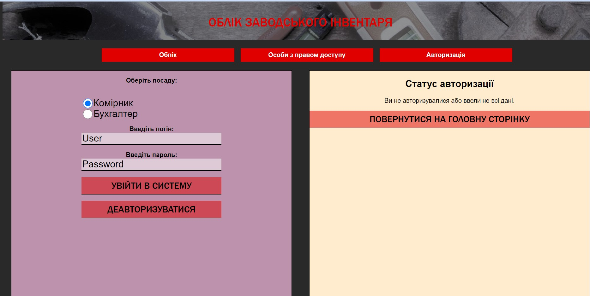

Авторизація. Сесія
Зовнішній вигяд сторінки для авторизації до входу в систему:

Зовнішній вигяд сторінки для авторизації після входу в систему(з'явилося повідомлення зліва, дані відправлені до сесії).
При наступному заході на цю сторінку дані заповнююься автоматично.
Дані, введені користувачем зберігаються у сесії: